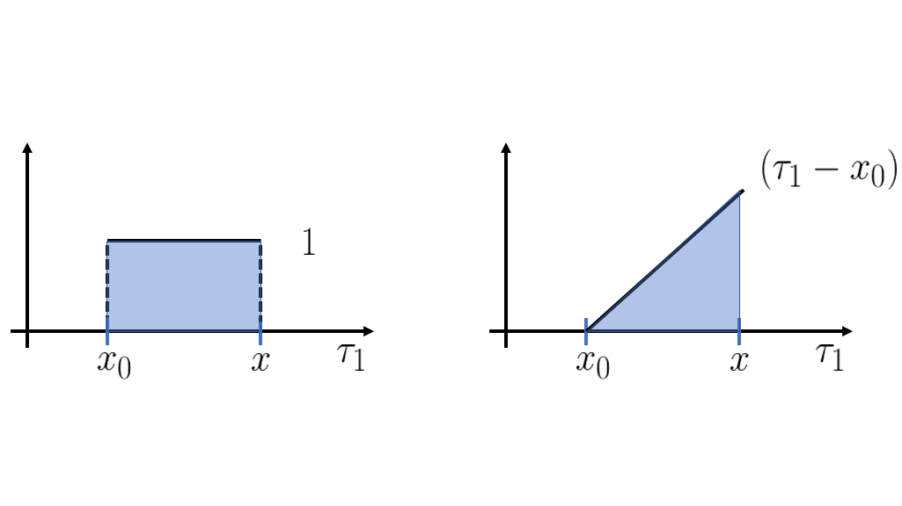

Intro
In this post we will derive a fundamental tool in Calculus, the Taylor polynomial (or Taylor series) of a function. For me this is the best derivation, that I found when I tried to understand this concept. I thought this derivation was new, but I found out later that a good mathematician which name I don't recall have found a similar one earlier :/ This derivation will just use the fundamental theorem of calculus.Problem
Last time we saw the fundamental theorem of calculus:Let $f:x\in\mathbb{R}\rightarrow y\in \mathbb{R}$ be a everywhere differentiable function, then $\int_{a}^{b} f'(x) dx = f(b) - f(a)$. This is nice, because I can write this function $f$ in terms of it's derivative: $$f(x) = f(x_{0}) + \int_{x_0}^{x} f'(\tau) d\tau \;\;\;\;\;\;\;\;(1)$$ But if you recall: $$ \int_{a}^{b} f(x) dx = \lim_{h \rightarrow 0} \sum_{i = 0}^n f(a + i h ) h, \;\; n = \left \lfloor \frac{b-a}{h} \right \rfloor$$ And this is difficult to compute, well actually is not that difficult, but maybe there is a simpler method. Imagine that you can compute all the derivatives of a $f$ at every point, then you could calculate $f'(x) ,\; f''(x), \; f^{(3)}(x), \; \dots$. So we can do the following: $$f'(x) = f'(x_0) + \int_{x_0}^{x} f''(\tau) d\tau\;\;\;\;\;\;\;\;(2)$$ From (1) and (2) we get: $$f(x) = f(x_0) + \int_{x_0}^{x}\left [ f'(x_0) + \int_{x_0}^{\tau}f''(u)du \right ]d\tau$$ $$\Leftrightarrow f(x) = f(x_0) + \int_{x_0}^{x} f'(x_0) + \int_{x_0}^{x}\int_{x_0}^{\tau}f''(u)du d\tau $$ We can also expand $f''(x) = f''(x_0) + \int_{x_0}^{x}f^{(3)}(\tau) d\tau$ and get: $$f(x) = f(x_0) + \int_{x_0}^x f'(x_0)d\tau + \int_{x_0}^x\int_{x_0}^{\tau}f''(x_0)du d\tau + \int_{x_0}^{x}\int_{x_0}^{\tau}\int_{x_0}^{u} f^{(3)}(v) dvdud\tau$$ We can do this process until infinity as follows: $$f(x) = f(x_0) + \int_{x_0}^x f'(x_0)d\tau_1 + \dots + \int_{x_0}^{x} ... \int_{x_0}^{\tau_{k-1}}f^{(k)}(x_0)d\tau_k...d\tau_1 + \dots \;\;\;\;\;\;\;\;(3)$$ Note that if $C$ is a constant then : $$\int_a^b C g(x) dx = \lim_{h \rightarrow 0} \sum_{i = 0}^n Cg(a + ih)h = \lim_{h \rightarrow 0} C\sum_{i = 0}^n g(a + ih)h = C \int_a^b g(x)dx$$ This property tell us that a constant inside an integral is the same as that constant multiplied by that integral. You may think this geometrically in terms of the area below the graph of a function, the area of the scaled version of the function is the area of the function scaled. We may use this idea to take a constant inside the multiple integrals as: $$ \int_{x_0}^{x} \dots \int_{x_0}^{\tau_{k-1}}Cd\tau_k \dots d\tau_1 =\int_{x_0}^x \dots C\left( \int_{x_0}^{\tau_{k-1}}d\tau_k\right )\dots d\tau_1 = \int_{x_0}^x\dots \int_{x_0}^{\tau_{k-2}}C\left( \int_{x_0}^{\tau_{k-1}}d\tau_k\right )d\tau_{k-1} \dots d\tau_1$$ $$\Leftrightarrow \int_{x_0}^x \dots \int_{x_0}^{\tau_{k-3}} C \left( \int_{x_0}^{\tau_{k-2}} \int_{x_0}^{\tau_{k-1}} d\tau_k d\tau_{k-1} \right ) d\tau_{k-2} \dots d\tau_1 = \dots = C \int_{x_0}^{x} \dots \int_{x_0}^{\tau_{k-1}} d\tau_k \dots d\tau_1 $$ Hence (3) becomes: $$f(x) = f(x_0) + f'(x_0)\int_{x_0}^x 1d\tau_1 + \dots + f^{(k)}(x_0)\int_{x_0}^{x} ... \int_{x_0}^{\tau_{k-1}}1d\tau_k...d\tau_1 + \dots$$ Let's us define: $$\Omega(x,k) = \int_{x_0}^{x} ... \int_{x_0}^{\tau_{k-1}}1d\tau_k...d\tau_1$$ Note that, $$\Omega(x,0) = 1$$ $$\Omega(x,1) = \int_{x_0}^x 1 d\tau_1$$ $$\Omega(x,2) = \int_{x_0}^x \int_{x_0}^{\tau_1} 1 d\tau_2 d\tau_1 \;\;\;\;\;\;\;\;(4)$$ Now we can write (3) as: $$f(x) = \sum_{k=0}^\infty f^{(k)}(x_0) \Omega(x,k)\;\;\;\;\;\;\;\;(5)$$ With (5) we just need to know all the derivatives at $x_0$ and $\Omega(x,k)$ to compute $f(x)$. Since we assume to know all derivatives at $x_0$, only $\Omega(x,k)$ is missing. From the sequence (4) I noticed a pattern : $$\Omega(x,k) = \int_{x_0}^x \Omega(\tau,k-1) d\tau\;\;\;\;\;\;\;\;(6)$$ You may check that this pattern is true, by checking (6) with lower $k$ such as $k=2$. Using the fundamental theorem of calculus we know that ($k > 0$) : $$\Omega(x, k) - \Omega(x_0, k) = \int_{x_0}^x \frac{d\Omega(\tau, k)}{dx} d\tau\;\;\;\;\;\;\;\;(7)$$ Hence we infer that (for $k > 0$) $\Omega(x_0, k) = 0$ and $$\Omega'(x,k) = \Omega(x, k-1)\;\;\;\;\;\;\;\;(7)$$

Fig.1 $\Omega(x,0)$ and $\Omega(x,1)$
In Fig.1 we see that $\Omega(x,1)$ is just the area under the graph of a constant function $y=1$. This is just the area of a square of base $x-x_0$ and height $1$, hence its area is $x-x_0$. $\Omega(x,2) = \int_{x_0}^x \int_{x_0}^{\tau_1} 1 d\tau_2 d\tau_1 = \int_{x_0}^x (\tau_1 - x_0) d\tau_1$ is the area below the graph of $(\tau_1-x_0)$.This is the area of a triangle with base and height equals to $x-x_0$, as Fig.1 suggests. Its area is $\frac{1}{2}(x-x_0)^2$. $\Omega(x,3) = \int_{x_0}^x \Omega(\tau_1,2) d\tau_1 = \int_{x_0}^x 0.5(\tau_1-x_0)^2 d\tau_1$ is the area under a parabola and that it isn't a trivial thing to compute. So we need a different approach. From (7) we have : $$\Omega(x,3)' = \Omega(x,2) = \frac{1}{2}(x-x_0)^2$$ If you have done your homework right from the post Intuition of Calculus, where you were asked to find the derivative of $x^n$, you know that $\left(x^n \right)' = n x^{n-1}$. Using this information we can make the hypothesis that $\Omega(x,3) = (x-x_0)^3$, but the problem is that $\left((x-x_0)^3\right)' = 3(x-x_0)^2 \neq \frac{1}{2}(x-x_0)^2$, which is close enough to work. With a simple change we find that : $$\frac{1}{2\times3}\left((x-x_0)^3\right)' = \frac{1}{2}(x-x_0)^2 = \Omega(x,2)$$ Which is our answer. If you continue to do similar steps you will notice an interesting pattern. This pattern suggest that $\Omega(x,k) = \frac{(x-x_0)^k}{k!}$. Let check if that hypothesis works with definition (7).